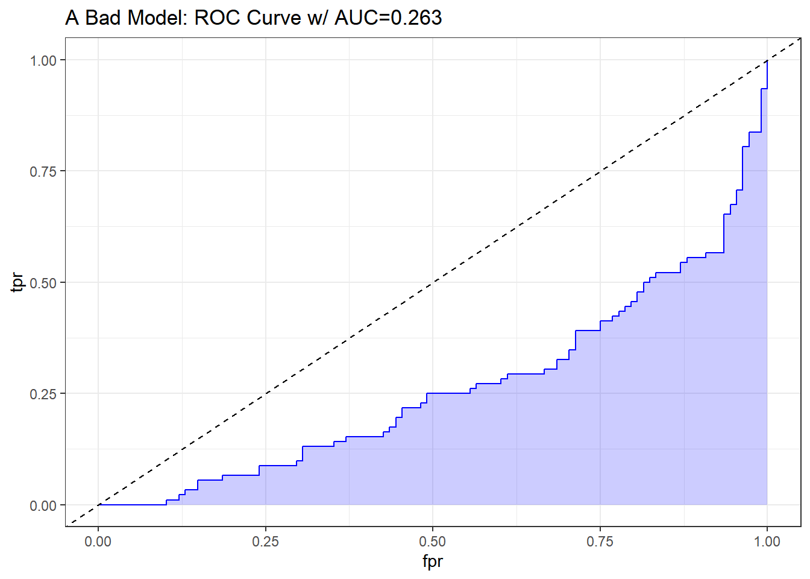
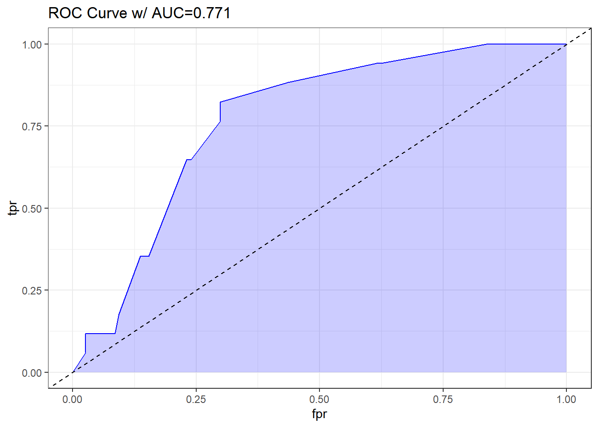
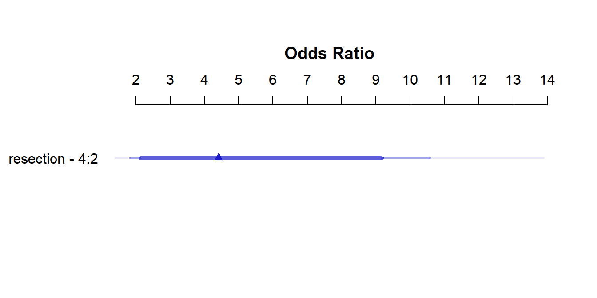

Chapter 12 Logistic Regression and the resect data
12.1 The resect data
My source for these data was Riffenburgh (2006). The data describe 134 patients who had undergone resection of the tracheal carina (most often this is done to address tumors in the trachea), and the resect.csv data file contains the following variables:
id= a patient ID #,age= the patient’s age at surgery,prior= prior tracheal surgery (1 = yes, 0 = no),resection= extent of the resection (in cm),intubated= whether intubation was required at the end of surgery (1 = yes, 0 = no), anddied= the patient’s death status (1 = dead, 0 = alive).
miss_var_summary(resect)# A tibble: 6 x 3
variable n_miss pct_miss
<chr> <int> <dbl>
1 id 0 0
2 age 0 0
3 prior 0 0
4 resection 0 0
5 intubated 0 0
6 died 0 0resect %>% count(died, prior)# A tibble: 4 x 3
died prior n
<dbl> <dbl> <int>
1 0 0 89
2 0 1 28
3 1 0 11
4 1 1 6resect %>% mosaic::inspect()
quantitative variables:
name class min Q1 median Q3 max mean sd n
...1 id numeric 1 34.25 67.5 100.75 134 67.5000000 38.8265373 134
...2 age numeric 8 36.00 51.0 61.00 80 47.8432836 15.7775202 134
...3 prior numeric 0 0.00 0.0 0.75 1 0.2537313 0.4367785 134
...4 resection numeric 1 2.00 2.5 4.00 6 2.9634328 1.2402123 134
...5 intubated numeric 0 0.00 0.0 0.00 1 0.1417910 0.3501447 134
...6 died numeric 0 0.00 0.0 0.00 1 0.1268657 0.3340713 134
missing
...1 0
...2 0
...3 0
...4 0
...5 0
...6 0We have no missing data, and 17 of the 134 patients died. Our goal will be to understand the characteristics of the patients, and how they relate to the binary outcome of interest, death.
12.2 Running A Simple Logistic Regression Model
In the most common scenario, a logistic regression model is used to predict a binary outcome (which can take on the values 0 or 1.) We will eventually fit a logistic regression model in two ways.
- Through the
glmfunction in the base package of R (similar tolmfor linear regression) - Through the
lrmfunction available in thermspackage (similar toolsfor linear regression)
We’ll focus on the glm approach first, and save the lrm ideas for later in this Chapter.
12.2.1 Logistic Regression Can Be Harder than Linear Regression
- Logistic regression models are fitted using the method of maximum likelihood in
glm, which requires multiple iterations until convergence is reached. - Logistic regression models are harder to interpret (for most people) than linear regressions.
- Logistic regression models don’t have the same set of assumptions as linear models.
- Logistic regression outcomes (yes/no) carry much less information than quantitative outcomes. As a result, fitting a reasonable logistic regression requires more data than a linear model of similar size.
- The rule I learned in graduate school was that a logistic regression requires 100 observations to fit an intercept plus another 15 observations for each candidate predictor. That’s not terrible, but it’s a very large sample size.
- Frank Harrell recommends that 96 observations + a function of the number of candidate predictors (which depends on the amount of variation in the predictors, but 15 x the number of such predictors isn’t too bad if the signal to noise ratio is pretty good) are required just to get reasonable confidence intervals around your predictions.
- In a twitter note, Frank suggests that 96 + 8 times the number of candidate parameters might be reasonable so long as the smallest cell of interest (combination of an outcome and a split of the covariates) is 96 or more observations.
- Peduzzi et al. (1996) suggest that if we let \(\pi\) be the smaller of the proportions of “yes” or “no” cases in the population of interest, and k be the number of inputs under consideration, then \(N = 10k/\pi\) is the minimum number of cases to include, except that if N < 100 by this standard, you should increase it to 100, according to Long (1997).
- That suggests that if you have an outcome that happens 10% of the time, and you are running a model with 3 predictors, then you could get away with \((10 \times 3)/(0.10) = 300\) observations, but if your outcome happened 40% of the time, you could get away with only \((10 \times 3)/(0.40) = 75\) observations, which you’d round up to 100.
12.3 Logistic Regression using glm
We’ll begin by attempting to predict death based on the extent of the resection.
res_modA <- glm(died ~ resection, data=resect,
family="binomial"(link="logit"))
res_modA
Call: glm(formula = died ~ resection, family = binomial(link = "logit"),
data = resect)
Coefficients:
(Intercept) resection
-4.4337 0.7417
Degrees of Freedom: 133 Total (i.e. Null); 132 Residual
Null Deviance: 101.9
Residual Deviance: 89.49 AIC: 93.49Note that the logit link is the default approach with the binomial family, so we could also have used:
res_modA <- glm(died ~ resection, data = resect,
family = "binomial")which yields the same model.
12.3.1 Interpreting the Coefficients of a Logistic Regression Model
Our model is:
\[ logit(died = 1) = log\left(\frac{Pr(died = 1)}{1 - Pr(died = 1)}\right) = \beta_0 + \beta_1 x = -4.4337 + 0.7417 \times resection \]
The predicted log odds of death for a subject with a resection of 4 cm is:
\[ log\left(\frac{Pr(died = 1)}{1 - Pr(died = 1)}\right) = -4.4337 + 0.7417 \times 4 = -1.467 \]
The predicted odds of death for a subject with a resection of 4 cm is thus:
\[ \frac{Pr(died = 1)}{1 - Pr(died = 1)} = e^{-4.4337 + 0.7417 \times 4} = e^{-1.467} = 0.2306 \]
Since the odds are less than 1, we should find that the probability of death is less than 1/2. With a little algebra, we see that the predicted probability of death for a subject with a resection of 4 cm is:
\[ Pr(died = 1) = \frac{e^{-4.4337 + 0.7417 \times 4}}{1 + e^{-4.4337 + 0.7417 \times 4}} = \frac{e^{-1.467}}{1 + e^{-1.467}} = \frac{0.2306}{1.2306} = 0.187 \]
In general, we can frame the model in terms of a statement about probabilities, like this:
\[ Pr(died = 1) = \frac{e^{\beta_0 + \beta_1 x}}{1 + {e^{\beta_0 + \beta_1 x}}} = \frac{e^{-4.4337 + 0.7417 \times resection}}{1 + e^{-4.4337 + 0.7417 \times resection}} \]
and so by substituting in values for resection, we can estimate the model’s fitted probabilities of death.
12.3.2 Using predict to describe the model’s fits
To obtain these fitted odds and probabilities in R, we can use the predict function.
- The default predictions are on the scale of the log odds. These predictions are also available through the
type = "link"command within thepredictfunction for a generalized linear model like logistic regression. - Here are the predicted log odds of death for a subject (Sally) with a 4 cm resection and a subject (Harry) who had a 5 cm resection.
predict(res_modA, newdata = tibble(resection = c(4,5))) 1 2
-1.4669912 -0.7253027 - We can also obtain predictions for each subject on the original response (here, probability) scale, backing out of the logit link.
predict(res_modA, newdata = tibble(resection = c(4, 5)),
type = "response") 1 2
0.1874004 0.3262264 So the predicted probability of death is 0.187 for Sally, the subject with a 4 cm resection, and 0.326 for Harry, the subject with a 5 cm resection.
12.3.3 Odds Ratio interpretation of Coefficients
Often, we will exponentiate the estimated slope coefficients of a logistic regression model to help us understand the impact of changing a predictor on the odds of our outcome.
exp(coef(res_modA))(Intercept) resection
0.01186995 2.09947754 To interpret this finding, suppose we have two subjects, Harry and Sally. Harry had a resection that was 1 cm larger than Sally. This estimated coefficient suggests that the estimated odds for death associated with Harry is 2.099 times larger than the odds for death associated with Sally. In general, the odds ratio comparing two subjects who differ by 1 cm on the resection length is 2.099.
To illustrate, again let’s assume that Harry’s resection was 5 cm, and Sally’s was 4 cm. Then we have:
\[ log\left(\frac{Pr(Harry died)}{1 - Pr(Harry died)}\right) = -4.4337 + 0.7417 \times 5 = -0.7253, \\ log\left(\frac{Pr(Sally died)}{1 - Pr(Sally died)}\right) = -4.4337 + 0.7417 \times 4 = -1.4667. \]
which implies that our estimated odds of death for Harry and Sally are:
\[ Odds(Harry died) = \frac{Pr(Harry died)}{1 - Pr(Harry died)} = e^{-4.4337 + 0.7417 \times 5} = e^{-0.7253} = 0.4842 \\ Odds(Sally died) = \frac{Pr(Sally died)}{1 - Pr(Sally died)} = e^{-4.4337 + 0.7417 \times 4} = e^{-1.4667} = 0.2307 \]
and so the odds ratio is:
\[ OR = \frac{Odds(Harry died)}{Odds(Sally died)} = \frac{0.4842}{0.2307} = 2.099 \]
- If the odds ratio was 1, that would mean that Harry and Sally had the same estimated odds of death, and thus the same estimated probability of death, despite having different sizes of resections.
- Since the odds ratio is greater than 1, it means that Harry has a higher estimated odds of death than Sally, and thus that Harry has a higher estimated probability of death than Sally.
- If the odds ratio was less than 1, it would mean that Harry had a lower estimated odds of death than Sally, and thus that Harry had a lower estimated probability of death than Sally.
Remember that the odds ratio is a fraction describing two positive numbers (odds can only be non-negative) so that the smallest possible odds ratio is 0.
12.3.4 Interpreting the rest of the model output from glm
res_modA
Call: glm(formula = died ~ resection, family = "binomial", data = resect)
Coefficients:
(Intercept) resection
-4.4337 0.7417
Degrees of Freedom: 133 Total (i.e. Null); 132 Residual
Null Deviance: 101.9
Residual Deviance: 89.49 AIC: 93.49In addition to specifying the logistic regression coefficients, we are also presented with information on degrees of freedom, deviance (null and residual) and AIC.
- The degrees of freedom indicate the sample size.
- Recall that we had n = 134 subjects in the data. The “Null” model includes only an intercept term (which uses 1 df) and we thus have n - 1 (here 133) degrees of freedom available for estimation.
- In our
res_modAmodel, a logistic regression is fit including a single slope (resection) and an intercept term. Each uses up one degree of freedom to build an estimate, so we have n - 2 = 134 - 2 = 132 residual df remaining.
- The AIC or Akaike Information Criterion (lower values are better) is also provided. This is helpful if we’re comparing multiple models for the same outcome.
12.3.5 Deviance and Comparing Our Model to the Null Model
- The deviance (a measure of the model’s lack of fit) is available for both the null model (the model with only an intercept) and for our model (
res_modA) predicting our outcome, mortality. - The deviance test, though available in R (see below) isn’t really a test of whether the model works well. Instead, it assumes the model is true, and then tests to see if the coefficients are detectably different from zero. So it isn’t of much practical use.
- To compare the
deviancestatistics, we can subtract the residual deviance from the null deviance to describe the impact of our model on fit. - Null Deviance - Residual Deviance can be compared to a \(\chi^2\) distribution with Null DF - Residual DF degrees of freedom to obtain a global test of the in-sample predictive power of our model.
- We can see this comparison more directly by running
anovaon our model:
- To compare the
anova(res_modA, test = "LRT")Analysis of Deviance Table
Model: binomial, link: logit
Response: died
Terms added sequentially (first to last)
Df Deviance Resid. Df Resid. Dev Pr(>Chi)
NULL 133 101.943
resection 1 12.45 132 89.493 0.0004179 ***
---
Signif. codes: 0 '***' 0.001 '**' 0.01 '*' 0.05 '.' 0.1 ' ' 1The test = "LRT" section completes a deviance test and provides a p value, which just estimates the probability that a chi-square distribution with a single degree of freedom would exhibit an improvement in deviance as large as 12.45.
The p value for the deviance test here is about 0.0004. But, again, this isn’t a test of whether the model is any good - it assumes the model is true, and then tests some consequences.
- Specifically, it tests whether (if the model is TRUE) some of the model’s coefficients are non-zero.
- That’s not so practically useful, so I discourage you from performing global tests of a logistic regression model with a deviance test.
12.3.6 Using glance with a logistic regression model
We can use the glance function from the broom package to obtain the null and residual deviance and degrees of freedom. Note that the deviance for our model is related to the log likelihood by -2*logLik.
glance(res_modA)# A tibble: 1 x 8
null.deviance df.null logLik AIC BIC deviance df.residual nobs
<dbl> <int> <dbl> <dbl> <dbl> <dbl> <int> <int>
1 102. 133 -44.7 93.5 99.3 89.5 132 134The glance result also provides the AIC, and the BIC (Bayes Information Criterion), each of which is helpful in understanding comparisons between multiple models for the same outcome (with smaller values of either criterion indicating better models.) The AIC is based on the deviance, but penalizes you for making the model more complicated. The BIC does the same sort of thing but with a different penalty.
Again we see that we have a null deviance of 101.94 on 133 degrees of freedom. Including the resection information in the model decreased the deviance to 89.49 points on 132 degrees of freedom, so that’s a decrease of 12.45 points while using one degree of freedom, a statistically significant reduction in deviance.
12.4 Interpreting the Model Summary
Let’s get a more detailed summary of our res_modA model, including 95% confidence intervals for the coefficients:
summary(res_modA)
Call:
glm(formula = died ~ resection, family = "binomial", data = resect)
Deviance Residuals:
Min 1Q Median 3Q Max
-1.1844 -0.5435 -0.3823 -0.2663 2.4501
Coefficients:
Estimate Std. Error z value Pr(>|z|)
(Intercept) -4.4337 0.8799 -5.039 4.67e-07 ***
resection 0.7417 0.2230 3.327 0.000879 ***
---
Signif. codes: 0 '***' 0.001 '**' 0.01 '*' 0.05 '.' 0.1 ' ' 1
(Dispersion parameter for binomial family taken to be 1)
Null deviance: 101.943 on 133 degrees of freedom
Residual deviance: 89.493 on 132 degrees of freedom
AIC: 93.493
Number of Fisher Scoring iterations: 5confint(res_modA, level = 0.95)Waiting for profiling to be done... 2.5 % 97.5 %
(Intercept) -6.344472 -2.855856
resection 0.322898 1.208311Some elements of this summary are very familiar from our work with linear models.
- We still have a five-number summary of residuals, although these are called deviance residuals.
- We have a table of coefficients with standard errors, and hypothesis tests, although these are Wald z-tests, rather than the t tests we saw in linear modeling.
- We have a summary of global fit in the comparison of null deviance and residual deviance, but without a formal p value. And we have the AIC, as discussed above.
- We also have some new items related to a dispersion parameter and to the number of Fisher Scoring Iterations.
Let’s walk through each of these elements.
12.4.1 Wald Z tests for Coefficients in a Logistic Regression
The coefficients output provides the estimated coefficients, and their standard errors, plus a Wald Z statistic, which is just the estimated coefficient divided by its standard error. This is compared to a standard Normal distribution to obtain the two-tailed p values summarized in the Pr(>|z|) column.
- The interesting result is
resection, which has a Wald Z = 3.327, yielding a p value of 0.00088. - The p value assesses whether the estimated coefficient of
resection, 0.7417, is statistically detectably different from 0. If the coefficient (on the logit scale) forresectionwas truly 0, this would mean that:- the log odds of death did not change based on the
resectionsize, - the odds of death were unchanged based on the
resectionsize (the odds ratio would be 1), and - the probability of death was unchanged based on the
resectionsize.
- the log odds of death did not change based on the
In our case, we have a statistically detectable change in the log odds of died associated with changes in resection, according to this p value. We conclude that resection size is associated with a positive impact on death rates (death rates are generally higher for people with larger resections.)
12.4.2 Confidence Intervals for the Coefficients
As in linear regression, we can obtain 95% confidence intervals (to get other levels, change the level parameter in confint) for the intercept and slope coefficients.
Here, we see, for example, that the coefficient of resection has a point estimate of 0.7417, and a confidence interval of (0.3229, 1.208). Since this is on the logit scale, it’s not that interpretable, but we will often exponentiate the model and its confidence interval to obtain a more interpretable result on the odds ratio scale.
tidy(res_modA, exponentiate = TRUE, conf.int = TRUE) %>%
select(term, estimate, conf.low, conf.high)# A tibble: 2 x 4
term estimate conf.low conf.high
<chr> <dbl> <dbl> <dbl>
1 (Intercept) 0.0119 0.00176 0.0575
2 resection 2.10 1.38 3.35 From this output, we can estimate the odds ratio for death associated with a 1 cm increase in resection size is 2.099, with a 95% CI of (1.38, 3.35). - If the odds ratio was 1, it would indicate that the odds of death did not change based on the change in resection size. - Here, it’s clear that the estimated odds of death will be larger (odds > 1) for subjects with larger resection sizes. Larger odds of death also indicate larger probabilities of death. This confidence interval indicates that with 95% confidence, we conclude that increases in resection size are associated with statistically detectable increases in the odds of death. - If the odds ratio was less than 1 (remember that it cannot be less than 0) that would mean that subjects with larger resection sizes were associated with smaller estimated odds of death.
12.4.3 Deviance Residuals
In logistic regression, it’s certainly a good idea to check to see how well the model fits the data. However, there are a few different types of residuals. The residuals presented here by default are called deviance residuals. Other types of residuals are available for generalized linear models, such as Pearson residuals, working residuals, and response residuals. Logistic regression model diagnostics often make use of multiple types of residuals.
The deviance residuals for each individual subject sum up to the deviance statistic for the model, and describe the contribution of each point to the model likelihood function.
The deviance residual, \(d_i\), for the ith observation in a model predicting \(y_i\) (a binary variable), with the estimate being \(\hat{\pi}_i\) is:
\[ d_i = s_i \sqrt{-2 [y_i log \hat{\pi_i} + (1 - y_i) log(1 - \hat{\pi_i})]}, \]
where \(s_i\) is 1 if \(y_i = 1\) and \(s_i = -1\) if \(y_i = 0\).
Again, the sum of the deviance residuals is the deviance.
12.4.4 Dispersion Parameter
The dispersion parameter is taken to be 1 for glm fit using either the binomial or Poisson families. For other sorts of generalized linear models, the dispersion parameter will be of some importance in estimating standard errors sensibly.
12.4.5 Fisher Scoring iterations
The solution of a logistic regression model involves maximizing a likelihood function. Fisher’s scoring algorithm in our res_modA needed five iterations to perform the logistic regression fit. All that this tells you is that the model converged, and didn’t require a lot of time to do so.
12.5 Plotting a Simple Logistic Regression Model
Let’s plot the logistic regression model res_modA for died using the extent of the resection in terms of probabilities. We can use either of two different approaches:
- we can plot the fitted values from our specific model against the original data, using the
augmentfunction from thebroompackage, or - we can create a smooth function called
binomial_smooththat plots a simple logistic model in an analogous way togeom_smooth(method = "lm")for a simple linear regression.
12.5.1 Using augment to capture the fitted probabilities
res_A_aug <- augment(res_modA, resect,
type.predict = "response")
head(res_A_aug)# A tibble: 6 x 12
id age prior resection intubated died .fitted .resid .std.resid .hat
<dbl> <dbl> <dbl> <dbl> <dbl> <dbl> <dbl> <dbl> <dbl> <dbl>
1 1 34 1 2.5 0 0 0.0705 -0.382 -0.384 0.0100
2 2 57 0 5 0 0 0.326 -0.889 -0.904 0.0337
3 3 60 1 4 1 1 0.187 1.83 1.84 0.0120
4 4 62 1 4.2 0 0 0.211 -0.689 -0.693 0.0143
5 5 28 0 6 1 1 0.504 1.17 1.22 0.0818
6 6 52 0 3 0 0 0.0990 -0.457 -0.459 0.00922
# ... with 2 more variables: .sigma <dbl>, .cooksd <dbl>This approach augments the resect data set with fitted, residual and other summaries of each observation’s impact on the fit, using the “response” type of prediction, which yields the fitted probabilities in the .fitted column.
12.5.2 Plotting a Logistic Regression Model’s Fitted Values
ggplot(res_A_aug, aes(x = resection, y = died)) +
geom_jitter(height = 0.05) +
geom_line(aes(x = resection, y = .fitted),
col = "blue") +
labs(title = "Logistic Regression from Model res_modA")12.5.3 Plotting a Simple Logistic Model using binomial_smooth
binomial_smooth <- function(...) {
geom_smooth(method = "glm",
method.args = list(family = "binomial"), ...)
}
ggplot(resect, aes(x = resection, y = died)) +
geom_jitter(height = 0.05) +
binomial_smooth() + ## ...smooth(se=FALSE) to leave out interval
labs(title = "Logistic Regression from Model A") +
theme_bw()`geom_smooth()` using formula 'y ~ x'As expected, we see an increase in the model probability of death as the extent of the resection grows larger.
12.6 How well does Model A classify subjects?
A natural question to ask is how well does our model classify patients in terms of likelihood of death.
We could specify a particular rule, for example: if the predicted probability of death is 0.5 or greater, then predict “Died.”
res_A_aug$rule.5 <- ifelse(res_A_aug$.fitted >= 0.5,
"Predict Died", "Predict Alive")
table(res_A_aug$rule.5, res_A_aug$died)
0 1
Predict Alive 114 16
Predict Died 3 1And perhaps build the linked table of row probabilities which tells us, for example, that 87.69% of the patients predicted by the model to be alive actually did survive.
round(100*prop.table(
table(res_A_aug$rule.5, res_A_aug$died), 1), 2)
0 1
Predict Alive 87.69 12.31
Predict Died 75.00 25.00Or the table of column probabilities which tell us, for example, that 97.44% of those who actually survived were predicted by the model to be alive.
round(100*prop.table(
table(res_A_aug$rule.5, res_A_aug$died), 2), 2)
0 1
Predict Alive 97.44 94.12
Predict Died 2.56 5.88We’ll discuss various measures of concordance derived from this sort of classification later.
12.7 The Confusion Matrix
Let’s build this misclassification table in standard epidemiological format.
confuseA_small <-
res_A_aug %>%
mutate(death_predicted = factor(.fitted >= 0.5),
death_actual = factor(died == "1"),
death_predicted = fct_relevel(death_predicted, "TRUE"),
death_actual = fct_relevel(death_actual, "TRUE")) %$%
table(death_predicted, death_actual)
confuseA_small death_actual
death_predicted TRUE FALSE
TRUE 1 3
FALSE 16 114In total, we have 134 observations.
- 115 correct predictions, or 85.8% accuracy
- 17 subjects who died, or 12.6% prevalence of death
- 4 subjects who were predicted to die, or 3.0% detection prevalence.
The sensitivity (also called recall) here is 1 / (1 + 16) = 5.9%.
- 5.9% of the subjects who actually died were predicted to die by the model.
The specificity here is 114 / (114 + 3) = 97.4%.
- 97.4% of the subjects who actually survived were predicted to survive by the model.
The positive predictive value (PPV: also called precision) is 1 / (1 + 3) = 25%
- Our predictions of death were correct 25% of the time.
The negative predictive value (NPV) is 114 / (114 + 16) = 87.7%
- Our predictions of survival were correct 87.7% of the time.
12.8 Using the confusionMatrix tool from the caret package
This provides a more detailed summary of the classification results from our logistic regression model.
res_A_aug %$%
confusionMatrix(
data = factor(.fitted >= 0.5),
reference = factor(died == 1),
positive = "TRUE"
)Confusion Matrix and Statistics
Reference
Prediction FALSE TRUE
FALSE 114 16
TRUE 3 1
Accuracy : 0.8582
95% CI : (0.7875, 0.9124)
No Information Rate : 0.8731
P-Value [Acc > NIR] : 0.747802
Kappa : 0.0493
Mcnemar's Test P-Value : 0.005905
Sensitivity : 0.058824
Specificity : 0.974359
Pos Pred Value : 0.250000
Neg Pred Value : 0.876923
Prevalence : 0.126866
Detection Rate : 0.007463
Detection Prevalence : 0.029851
Balanced Accuracy : 0.516591
'Positive' Class : TRUE
- The No Information Rate or NIR is just the percentage of correct predictions we’d get if we just predicted the more common classification (not dead) for every subject.
- Kappa is a correlation statistic ranging from -1 to +1. It measures the inter-rater reliability of our predictions and the true classifications, in this context. Complete agreement would be +1, and complete disagreement would be -1.
12.9 Receiver Operating Characteristic Curve Analysis
One way to assess the predictive accuracy within the model development sample in a logistic regression is to consider an analyses based on the receiver operating characteristic (ROC) curve. ROC curves are commonly used in assessing diagnoses in medical settings, and in signal detection applications.
The accuracy of a “test” can be evaluated by considering two types of errors: false positives and false negatives.
In our res_modA model, we use resection size to predict whether the patient died. Suppose we established a value R, so that if the resection size was larger than R cm, we would predict that the patient died, and otherwise we would predict that the patient did not die.
A good outcome of our model’s “test,” then, would be when the resection size is larger than R for a patient who actually died. Another good outcome would be when the resection size is smaller than R for a patient who survived.
But we can make errors, too.
- A false positive error in this setting would occur when the resection size is larger than R (so we predict the patient dies) but in fact the patient does not die.
- A false negative error in this case would occur when the resection size is smaller than R (so we predict the patient survives) but in fact the patient dies.
Formally, the true positive fraction (TPF) for a specific resection cutoff \(R\), is the probability of a positive test (a prediction that the patient will die) among the people who have the outcome died = 1 (those who actually die).
\[ TPF(R) = Pr(resection > R | subject died) \]
Similarly, the false positive fraction (FPF) for a specific cutoff \(R\) is the probability of a positive test (prediction that the patient will die) among the people with died = 0 (those who don’t actually die)
\[ FPF(R) = Pr(resection > R | subject did not die) \]
The True Positive Rate is referred to as the sensitivity of a diagnostic test, and the True Negative rate (1 - the False Positive rate) is referred to as the specificity of a diagnostic test.
Since the cutoff \(R\) is not fixed in advanced, we can plot the value of TPF (on the y axis) against FPF (on the x axis) for all possible values of \(R\), and this is what the ROC curve is. Others refer to the Sensitivity on the Y axis, and 1-Specificity on the X axis, and this is the same idea.
Before we get too far into the weeds, let me show you some simple situations so you can understand what you might learn from the ROC curve. The web page http://blog.yhat.com/posts/roc-curves.html provides source materials.
12.9.1 Interpreting the Area under the ROC curve
The AUC or Area under the ROC curve is the amount of space underneath the ROC curve. Often referred to as the c statistic, the AUC represents the quality of your TPR and FPR overall in a single number. The C statistic ranges from 0 to 1, with C = 0.5 for a prediction that is no better than random guessing, and C = 1 for a perfect prediction model.
Next, I’ll build a simulation to demonstrate several possible ROC curves in the sections that follow.
set.seed(432999)
sim.temp <- data_frame(x = rnorm(n = 200),
prob = exp(x)/(1 + exp(x)),
y = as.numeric(1 * runif(200) < prob))
sim.temp <- sim.temp %>%
mutate(p_guess = 1,
p_perfect = y,
p_bad = exp(-2*x) / (1 + exp(-2*x)),
p_ok = prob + (1-y)*runif(1, 0, 0.05),
p_good = prob + y*runif(1, 0, 0.27))12.9.1.1 What if we are guessing?
If we’re guessing completely at random, then the model should correctly classify a subject (as died or not died) about 50% of the time, so the TPR and FPR will be equal. This yields a diagonal line in the ROC curve, and an area under the curve (C statistic) of 0.5.
There are several ways to do this on the web, but I’ll show this one, which has some bizarre code, but that’s a function of using a package called ROCR to do the work. It comes from this link
pred_guess <- prediction(sim.temp$p_guess, sim.temp$y)
perf_guess <- performance(pred_guess, measure = "tpr", x.measure = "fpr")
auc_guess <- performance(pred_guess, measure="auc")
auc_guess <- round(auc_guess@y.values[[1]],3)
roc_guess <- data.frame(fpr=unlist(perf_guess@x.values),
tpr=unlist(perf_guess@y.values),
model="GLM")
ggplot(roc_guess, aes(x=fpr, ymin=0, ymax=tpr)) +
geom_ribbon(alpha=0.2, fill = "blue") +
geom_line(aes(y=tpr), col = "blue") +
labs(title = paste0("Guessing: ROC Curve w/ AUC=", auc_guess)) +
theme_bw()
12.9.1.2 What if we classify things perfectly?
If we’re classifying subjects perfectly, then we have a TPR of 1 and an FPR of 0. That yields an ROC curve that looks like the upper and left edges of a box. If our model correctly classifies a subject (as died or not died) 100% of the time, the area under the curve (c statistic) will be 1.0. We’ll add in the diagonal line here (in a dashed black line) to show how this model compares to random guessing.
pred_perf <- prediction(sim.temp$p_perfect, sim.temp$y)
perf_perf <- performance(pred_perf, measure = "tpr", x.measure = "fpr")
auc_perf <- performance(pred_perf, measure="auc")
auc_perf <- round(auc_perf@y.values[[1]],3)
roc_perf <- data.frame(fpr=unlist(perf_perf@x.values),
tpr=unlist(perf_perf@y.values),
model="GLM")
ggplot(roc_perf, aes(x=fpr, ymin=0, ymax=tpr)) +
geom_ribbon(alpha=0.2, fill = "blue") +
geom_line(aes(y=tpr), col = "blue") +
geom_abline(intercept = 0, slope = 1, lty = "dashed") +
labs(title = paste0("Perfect Prediction: ROC Curve w/ AUC=", auc_perf)) +
theme_bw()12.9.1.3 What does “worse than guessing” look like?
A bad classifier will appear below and to the right of the diagonal line we’d see if we were completely guessing. Such a model will have a c statistic below 0.5, and will be valueless.
pred_bad <- prediction(sim.temp$p_bad, sim.temp$y)
perf_bad <- performance(pred_bad, measure = "tpr", x.measure = "fpr")
auc_bad <- performance(pred_bad, measure="auc")
auc_bad <- round(auc_bad@y.values[[1]],3)
roc_bad <- data.frame(fpr=unlist(perf_bad@x.values),
tpr=unlist(perf_bad@y.values),
model="GLM")
ggplot(roc_bad, aes(x=fpr, ymin=0, ymax=tpr)) +
geom_ribbon(alpha=0.2, fill = "blue") +
geom_line(aes(y=tpr), col = "blue") +
geom_abline(intercept = 0, slope = 1, lty = "dashed") +
labs(title = paste0("A Bad Model: ROC Curve w/ AUC=", auc_bad)) +
theme_bw()12.9.1.4 What does “better than guessing” look like?
An “OK” classifier will appear above and to the left of the diagonal line we’d see if we were completely guessing. Such a model will have a c statistic above 0.5, and might have some value. The plot below shows a very fairly poor model, but at least it’s better than guessing.
pred_ok <- prediction(sim.temp$p_ok, sim.temp$y)
perf_ok <- performance(pred_ok, measure = "tpr", x.measure = "fpr")
auc_ok <- performance(pred_ok, measure="auc")
auc_ok <- round(auc_ok@y.values[[1]],3)
roc_ok <- data.frame(fpr=unlist(perf_ok@x.values),
tpr=unlist(perf_ok@y.values),
model="GLM")
ggplot(roc_ok, aes(x=fpr, ymin=0, ymax=tpr)) +
geom_ribbon(alpha=0.2, fill = "blue") +
geom_line(aes(y=tpr), col = "blue") +
geom_abline(intercept = 0, slope = 1, lty = "dashed") +
labs(title = paste0("A Mediocre Model: ROC Curve w/ AUC=", auc_ok)) +
theme_bw()Sometimes people grasp for a rough guide as to the accuracy of a model’s predictions based on the area under the ROC curve. A common thought is to assess the C statistic much like you would a class grade.
| C statistic | Interpretation |
|---|---|
| 0.90 to 1.00 | model does an excellent job at discriminating “yes” from “no” (A) |
| 0.80 to 0.90 | model does a good job (B) |
| 0.70 to 0.80 | model does a fair job (C) |
| 0.60 to 0.70 | model does a poor job (D) |
| 0.50 to 0.60 | model fails (F) |
| below 0.50 | model is worse than random guessing |
12.9.1.5 What does “pretty good” look like?
A strong and good classifier will appear above and to the left of the diagonal line we’d see if we were completely guessing, often with a nice curve that is continually increasing and appears to be pulled up towards the top left. Such a model will have a c statistic well above 0.5, but not as large as 1. The plot below shows a stronger model, which appears substantially better than guessing.
pred_good <- prediction(sim.temp$p_good, sim.temp$y)
perf_good <- performance(pred_good, measure = "tpr", x.measure = "fpr")
auc_good <- performance(pred_good, measure="auc")
auc_good <- round(auc_good@y.values[[1]],3)
roc_good <- data.frame(fpr=unlist(perf_good@x.values),
tpr=unlist(perf_good@y.values),
model="GLM")
ggplot(roc_good, aes(x=fpr, ymin=0, ymax=tpr)) +
geom_ribbon(alpha=0.2, fill = "blue") +
geom_line(aes(y=tpr), col = "blue") +
geom_abline(intercept = 0, slope = 1, lty = "dashed") +
labs(title = paste0("A Pretty Good Model: ROC Curve w/ AUC=", auc_good)) +
theme_bw()
12.10 The ROC Plot for res_modA
Let me show you the ROC curve for our res_modA model.
## requires ROCR package
prob <- predict(res_modA, resect, type="response")
pred <- prediction(prob, resect$died)
perf <- performance(pred, measure = "tpr", x.measure = "fpr")
auc <- performance(pred, measure="auc")
auc <- round(auc@y.values[[1]],3)
roc.data <- data.frame(fpr=unlist(perf@x.values),
tpr=unlist(perf@y.values),
model="GLM")
ggplot(roc.data, aes(x=fpr, ymin=0, ymax=tpr)) +
geom_ribbon(alpha=0.2, fill = "blue") +
geom_line(aes(y=tpr), col = "blue") +
geom_abline(intercept = 0, slope = 1, lty = "dashed") +
labs(title = paste0("ROC Curve w/ AUC=", auc)) +
theme_bw()Based on the C statistic (AUC = 0.771) this would rank somewhere near the high end of a “fair” predictive model by this standard, not quite to the level of a “good” model.
12.10.1 Another way to plot the ROC Curve
If we’ve loaded the pROC package, we can also use the following (admittedly simpler) approach to plot the ROC curve, without ggplot2, and to obtain the C statistic, and a 95% confidence interval around that C statistic.
## requires pROC package
roc.modA <-
roc(resect$died ~ predict(res_modA, type="response"),
ci = TRUE)
roc.modA
Call:
roc.formula(formula = resect$died ~ predict(res_modA, type = "response"), ci = TRUE)
Data: predict(res_modA, type = "response") in 117 controls (resect$died 0) < 17 cases (resect$died 1).
Area under the curve: 0.7707
95% CI: 0.67-0.8715 (DeLong)plot(roc.modA)12.11 Assessing Residual Plots from Model A
Residuals are certainly less informative for logistic regression than they are for linear regression: not only do yes/no outcomes inherently contain less information than continuous ones, but the fact that the adjusted response depends on the fit hampers our ability to use residuals as external checks on the model.
This is mitigated to some extent, however, by the fact that we are also making fewer distributional assumptions in logistic regression, so there is no need to inspect residuals for, say, skewness or heteroskedasticity.
- Patrick Breheny, University of Kentucky, Slides on GLM Residuals and Diagnostics
The usual residual plots are available in R for a logistic regression model, but most of them are irrelevant in the logistic regression setting. The residuals shouldn’t follow a standard Normal distribution, and they will not show constant variance over the range of the predictor variables, so plots looking into those issues aren’t helpful.
The only plot from the standard set that we’ll look at in many settings is plot 5, which helps us assess influence (via Cook’s distance contours), and a measure related to leverage (how unusual an observation is in terms of the predictors) and standardized Pearson residuals.
plot(res_modA, which = 5)
In this case, I don’t see any highly influential points, as no points fall outside of the Cook’s distance (0.5 or 1) contours.
12.12 Model B: A “Kitchen Sink” Logistic Regression Model
res_modB <- glm(died ~ resection + age + prior + intubated,
data = resect, family = binomial)
res_modB
Call: glm(formula = died ~ resection + age + prior + intubated, family = binomial,
data = resect)
Coefficients:
(Intercept) resection age prior intubated
-5.152886 0.612211 0.001173 0.814691 2.810797
Degrees of Freedom: 133 Total (i.e. Null); 129 Residual
Null Deviance: 101.9
Residual Deviance: 67.36 AIC: 77.3612.12.1 Comparing Model A to Model B
anova(res_modA, res_modB)Analysis of Deviance Table
Model 1: died ~ resection
Model 2: died ~ resection + age + prior + intubated
Resid. Df Resid. Dev Df Deviance
1 132 89.493
2 129 67.359 3 22.134The addition of age, prior and intubated reduces the lack of fit by 22.134 points, at a cost of 3 degrees of freedom.
glance(res_modA)# A tibble: 1 x 8
null.deviance df.null logLik AIC BIC deviance df.residual nobs
<dbl> <int> <dbl> <dbl> <dbl> <dbl> <int> <int>
1 102. 133 -44.7 93.5 99.3 89.5 132 134glance(res_modB)# A tibble: 1 x 8
null.deviance df.null logLik AIC BIC deviance df.residual nobs
<dbl> <int> <dbl> <dbl> <dbl> <dbl> <int> <int>
1 102. 133 -33.7 77.4 91.8 67.4 129 134By either AIC or BIC, the larger model (res_modB) looks more effective.
12.12.2 Interpreting Model B
summary(res_modB)
Call:
glm(formula = died ~ resection + age + prior + intubated, family = binomial,
data = resect)
Deviance Residuals:
Min 1Q Median 3Q Max
-1.7831 -0.3741 -0.2386 -0.2014 2.5228
Coefficients:
Estimate Std. Error z value Pr(>|z|)
(Intercept) -5.152886 1.469453 -3.507 0.000454 ***
resection 0.612211 0.282807 2.165 0.030406 *
age 0.001173 0.020646 0.057 0.954700
prior 0.814691 0.704785 1.156 0.247705
intubated 2.810797 0.658395 4.269 1.96e-05 ***
---
Signif. codes: 0 '***' 0.001 '**' 0.01 '*' 0.05 '.' 0.1 ' ' 1
(Dispersion parameter for binomial family taken to be 1)
Null deviance: 101.943 on 133 degrees of freedom
Residual deviance: 67.359 on 129 degrees of freedom
AIC: 77.359
Number of Fisher Scoring iterations: 6It appears that the intubated predictor adds significant value to the model, by the Wald test.
Let’s focus on the impact of these variables through odds ratios.
tidy(res_modB, exponentiate = TRUE, conf.int = TRUE) %>%
select(term, estimate, conf.low, conf.high)# A tibble: 5 x 4
term estimate conf.low conf.high
<chr> <dbl> <dbl> <dbl>
1 (Intercept) 0.00578 0.000241 0.0837
2 resection 1.84 1.08 3.35
3 age 1.00 0.962 1.04
4 prior 2.26 0.549 9.17
5 intubated 16.6 4.75 64.6 At a 5% significance level, we might conclude that:
- larger sized
resections are associated with a meaningful rise (est OR: 1.84, 95% CI 1.08, 3.35) in the odds of death, holding all other predictors constant, - the need for
intubationat the end of surgery is associated with a substantial rise (est OR: 16.6, 95% CI 4.7, 64.7) in the odds of death, holding all other predictors constant, but that - older
ageas well as having apriortracheal surgery appears to be associated with an increase in death risk, but not to an extent that we can declare statistically significant.
12.13 Plotting Model B
Let’s think about plotting the fitted values from our model, in terms of probabilities.
12.13.1 Using augment to capture the fitted probabilities
res_B_aug <- augment(res_modB, resect,
type.predict = "response")
head(res_B_aug)# A tibble: 6 x 12
id age prior resection intubated died .fitted .resid .std.resid .hat
<dbl> <dbl> <dbl> <dbl> <dbl> <dbl> <dbl> <dbl> <dbl> <dbl>
1 1 34 1 2.5 0 0 0.0591 -0.349 -0.354 0.0267
2 2 57 0 5 0 0 0.117 -0.498 -0.508 0.0380
3 3 60 1 4 1 1 0.729 0.794 0.844 0.114
4 4 62 1 4.2 0 0 0.155 -0.581 -0.602 0.0704
5 5 28 0 6 1 1 0.796 0.675 0.724 0.131
6 6 52 0 3 0 0 0.0371 -0.275 -0.277 0.0105
# ... with 2 more variables: .sigma <dbl>, .cooksd <dbl>12.13.2 Plotting Model B Fits by Observed Mortality
ggplot(res_B_aug, aes(x = factor(died), y = .fitted, col = factor(died))) +
geom_boxplot() +
geom_jitter(width = 0.1) +
guides(col = FALSE)Certainly it appears as though most of our predicted probabilities (of death) for the subjects who actually survived are quite small, but not all of them. We also have at least 6 big “misses” among the 17 subjects who actually died.
12.13.3 Confusion Matrix for Model B
res_B_aug %$%
confusionMatrix(
data = factor(.fitted >= 0.5),
reference = factor(died == 1),
positive = "TRUE"
)Confusion Matrix and Statistics
Reference
Prediction FALSE TRUE
FALSE 113 6
TRUE 4 11
Accuracy : 0.9254
95% CI : (0.867, 0.9636)
No Information Rate : 0.8731
P-Value [Acc > NIR] : 0.03897
Kappa : 0.6453
Mcnemar's Test P-Value : 0.75183
Sensitivity : 0.64706
Specificity : 0.96581
Pos Pred Value : 0.73333
Neg Pred Value : 0.94958
Prevalence : 0.12687
Detection Rate : 0.08209
Detection Prevalence : 0.11194
Balanced Accuracy : 0.80644
'Positive' Class : TRUE
12.13.4 The ROC curve for Model B
## requires ROCR package
prob <- predict(res_modB, resect, type="response")
pred <- prediction(prob, resect$died)
perf <- performance(pred, measure = "tpr", x.measure = "fpr")
auc <- performance(pred, measure="auc")
auc <- round(auc@y.values[[1]],3)
roc.data <- data.frame(fpr=unlist(perf@x.values),
tpr=unlist(perf@y.values),
model="GLM")
ggplot(roc.data, aes(x=fpr, ymin=0, ymax=tpr)) +
geom_ribbon(alpha=0.2, fill = "blue") +
geom_line(aes(y=tpr), col = "blue") +
geom_abline(intercept = 0, slope = 1, lty = "dashed") +
labs(title = paste0("Model B: ROC Curve w/ AUC=", auc)) +
theme_bw()The area under the curve (C-statistic) is 0.86, which certainly looks like a more discriminating fit than model A with resection alone.
12.13.5 Residuals, Leverage and Influence
plot(res_modB, which = 5)Again, we see no signs of deeply influential points in this model.
12.14 Logistic Regression using lrm
To obtain the Nagelkerke \(R^2\) and the C statistic, as well as some other summaries, I’ll now demonstrate the use of lrm from the rms package to fit a logistic regression model.
We’ll return to the original model, predicting death using resection size alone.
dd <- datadist(resect)
options(datadist="dd")
res_modC <- lrm(died ~ resection, data=resect, x=TRUE, y=TRUE)
res_modCLogistic Regression Model
lrm(formula = died ~ resection, data = resect, x = TRUE, y = TRUE)
Model Likelihood Discrimination Rank Discrim.
Ratio Test Indexes Indexes
Obs 134 LR chi2 12.45 R2 0.167 C 0.771
0 117 d.f. 1 g 1.037 Dxy 0.541
1 17 Pr(> chi2) 0.0004 gr 2.820 gamma 0.582
max |deriv| 2e-06 gp 0.110 tau-a 0.121
Brier 0.103
Coef S.E. Wald Z Pr(>|Z|)
Intercept -4.4337 0.8799 -5.04 <0.0001
resection 0.7417 0.2230 3.33 0.0009
This output specifies the following:
Obs= The number of observations used to fit the model, with0= the number of zeros and1= the number of ones in our outcome,died. Also specified is the maximum absolute value of the derivative at the point where the maximum likelihood function was estimated. I wouldn’t worry about that practically, as all you will care about is whether the iterative function-fitting process converged, and R will warn you in other ways if it doesn’t.- A likelihood ratio test (drop in deviance test) subtracting the residual deviance from the null deviance obtain the Likelihood Ratio \(\chi^2\) statistic, subtracting residual df from null df to obtain degrees of freedom, and comparing the resulting test statistic to a \(\chi^2\) distribution with the appropriate degrees of freedom to determine a p value.
- A series of discrimination indexes, including the Nagelkerke R2, symbolized R2, and several others we’ll discuss shortly.
- A series of rank discrimination indexes, including the C statistic (area under the ROC curve) and Somers’ D (Dxy), and several others.
- A table of coefficients, standard errors, Wald Z statistics and p values based on those Wald statistics.
The C statistic is estimated to be 0.771, with an associated (Nagelkerke) \(R^2\) = 0.167, both indicating at best mediocre performance for this model, as it turns out.
12.14.1 Interpreting Nagelkerke R2
There are many ways to calculate \(R^2\) for logistic regression.
- At the unfortunate URL linked here (unfortunate because the term “pseudo” is misspelled) there is a nice summary of the key issue, which is that there are at least three different ways to think about \(R^2\) in linear regression that are equivalent in that context, but when you move to a categorical outcome, which interpretation you use leads you down a different path for extension to the new type of outcome.
- Paul Allison, for instance, describes several at this link in a post entitled “What’s the Best R-Squared for Logistic Regression?”
- Jonathan Bartlett looks at McFadden’s pseudo \(R^2\) in some detail (including some R code) at this link, in a post entitled “R squared in logistic regression”
The Nagelkerke approach that is presented as R2 in the lrm output is as good as most of the available approaches, and has the positive feature that it does reach 1 if the fitted model shows as much improvement as possible over the null model (which predicts the mean response for all subjects, and has R2 = 0). The greater the improvement, the higher the Nagelkerke R2.
For model A, our Nagelkerke R2 = 0.167, which is pretty poor. It doesn’t technically mean that 16.7% of any sort of variation has been explained, though.
12.14.2 Interpreting the C statistic and Plotting the ROC Curve
The C statistic is a measure of the area under the receiver operating characteristic curve. This link has some nice material that provides some insight into the C statistic and ROC curve.
- Recall that C ranges from 0 to 1. 0 = BAD, 1 = GOOD.
- values of C less than 0.5 indicate that your prediction model is not even as good as simple random guessing of “yes” or “no” for your response.
- C = 0.5 for random guessing
- C = 1 indicates a perfect classification scheme - one that correctly guesses “yes” for all “yes” patients, and for none of the “no” patients.
- The closer C is to 1, the happier we’ll be, most of the time.
- Often we’ll call models with 0.5 < C < 0.8 poor or weak in terms of predictive ability by this measure
- 0.8 \(\leq\) C < 0.9 are moderately strong in terms of predictive power (indicate good discrimination)
- C \(\geq\) 0.9 usually indicates a very strong model in this regard (indicate excellent discrimination)
We’ve seen the ROC curve for this model before, when we looked at model res_modA fitted using glm in the previous chapter. But, just for completeness, I’ll include it.
Note. I change the initial predict call from type = "response" for a glm fit to type = "fitted" in a lrm fit. Otherwise, this is the same approach.
## requires ROCR package
prob <- predict(res_modC, resect, type="fitted")
pred <- prediction(prob, resect$died)
perf <- performance(pred, measure = "tpr", x.measure = "fpr")
auc <- performance(pred, measure="auc")
auc <- round(auc@y.values[[1]],3)
roc.data <- data.frame(fpr=unlist(perf@x.values),
tpr=unlist(perf@y.values),
model="GLM")
ggplot(roc.data, aes(x=fpr, ymin=0, ymax=tpr)) +
geom_ribbon(alpha=0.2, fill = "blue") +
geom_line(aes(y=tpr), col = "blue") +
geom_abline(intercept = 0, slope = 1, lty = "dashed") +
labs(title = paste0("Model C: ROC Curve w/ AUC=", auc)) +
theme_bw()12.14.3 The C statistic and Somers’ D
- The C statistic is directly related to Somers’ D statistic, abbreviated \(D_{xy}\), by the equation C = 0.5 + (D/2).
- Somers’ D and the ROC area only measure how well predicted values from the model can rank-order the responses. For example, predicted probabilities of 0.01 and 0.99 for a pair of subjects are no better than probabilities of 0.2 and 0.8 using rank measures, if the first subject had a lower response value than the second.
- Thus, the C statistic (or \(D_{xy}\)) may not be very sensitive ways to choose between models, even though they provide reasonable summaries of the models individually.
- This is especially true when the models are strong. The Nagelkerke R2 may be more sensitive.
- But as it turns out, we sometimes have to look at the ROC shapes, as the summary statistic alone isn’t enough.
In our case, Somers D (Dxy) = .541, so the C statistic is 0.771.
12.14.4 Validating the Logistic Regression Model Summary Statistics
Like other regression-fitting tools in rms, the lrm function has a special validate tool to help perform resampling validation of a model, with or without backwards step-wise variable selection. Here, we’ll validate our model’s summary statistics using 100 bootstrap replications.
set.seed(432001)
validate(res_modC, B = 100) index.orig training test optimism index.corrected n
Dxy 0.5415 0.5422 0.5415 0.0007 0.5408 100
R2 0.1666 0.1748 0.1666 0.0083 0.1583 100
Intercept 0.0000 0.0000 0.1631 -0.1631 0.1631 100
Slope 1.0000 1.0000 1.0463 -0.0463 1.0463 100
Emax 0.0000 0.0000 0.0428 0.0428 0.0428 100
D 0.0854 0.0909 0.0854 0.0055 0.0800 100
U -0.0149 -0.0149 0.0017 -0.0167 0.0017 100
Q 0.1004 0.1058 0.0837 0.0221 0.0783 100
B 0.1025 0.0986 0.1051 -0.0065 0.1090 100
g 1.0369 1.0677 1.0369 0.0308 1.0061 100
gp 0.1101 0.1080 0.1101 -0.0021 0.1122 100Recall that our area under the curve (C statistic) = 0.5 + (Dxy/2), so that we can also use the first row of statistics to validate the C statistic. Accounting for optimism in this manner, our validation-corrected estimates are Dxy = 0.5408, so C = 0.7704, and, from the second row of statistics, we can read off the validated Nagelkerke R2, which is 0.1583.
12.14.5 Plotting the Summary of the lrm approach
The summary function applied to an lrm fit shows the effect size comparing the 25th to the 75th percentile of resection.
plot(summary(res_modC))summary(res_modC) Effects Response : died
Factor Low High Diff. Effect S.E. Lower 0.95 Upper 0.95
resection 2 4 2 1.4834 0.44591 0.6094 2.3574
Odds Ratio 2 4 2 4.4078 NA 1.8393 10.5630 So, a move from a resection of 2 cm to a resection of 4 cm is associated with an estimated effect on the log odds of death of 1.48 (with standard error 0.45), or with an estimated effect on the odds ratio for death of 4.41, with 95% CI (1.84, 10.56).
12.14.6 Plot In-Sample Predictions for Model C
Here we plot the effect of resection (and 95% confidence intervals) across the range of observed values of resection on the log odds of death. Note the linear effect of resection size on the log odds scale.
ggplot(Predict(res_modC))By applying the plogis function within the Predict command, we can plot the effect of resection on the estimated probability of death. Note the non-linear effect on this probability in this logistic regression model.
ggplot(Predict(res_modC, fun = plogis)) +
labs(y = "Predicted probability from Model C",
title = "Model C with the resect data")
The Predict function itself provides the raw material being captured in this plot.
head(Predict(res_modC, fun = plogis)) resection yhat lower upper .predictor.
resection.1 1.000000 0.02431476 0.006636502 0.08505223 resection
resection.2 1.020101 0.02467096 0.006789313 0.08559056 resection
resection.3 1.040201 0.02503224 0.006945549 0.08613277 resection
resection.4 1.060302 0.02539867 0.007105283 0.08667889 resection
resection.5 1.080402 0.02577033 0.007268589 0.08722896 resection
resection.6 1.100503 0.02614728 0.007435542 0.08778304 resection
Response variable (y):
Limits are 0.95 confidence limits12.14.7 ANOVA from the lrm approach
anova(res_modC) Wald Statistics Response: died
Factor Chi-Square d.f. P
resection 11.07 1 9e-04
TOTAL 11.07 1 9e-04The ANOVA approach applied to a lrm fit provides a Wald test for the model as a whole. Here, the use of resection is a significant improvement over a null (intercept-only) model. The p value is 9 x 10-4.
12.14.8 Are any points particularly influential?
I’ll use a cutoff for dfbeta here of 0.3, instead of the default 0.2, because I want to focus on truly influential points. Note that we have to use the data frame version of resect as show.influence isn’t tibble-friendly.
inf.C <- which.influence(res_modC, cutoff=0.3)
inf.C$Intercept
[1] 84 128
$resection
[1] 84show.influence(object = inf.C, dframe = data.frame(resect)) Count resection
84 2 *2.0
128 1 2.5It appears that observation 84 may have a meaningful effect on both the intercept and the coefficient for resection.
12.14.9 A Nomogram for Model C
We use the plogis function within a nomogram call to get R to produce fitted probabilities (of our outcome, died) in this case.
plot(nomogram(res_modC, fun=plogis,
fun.at=c(0.05, seq(0.1, 0.9, by = 0.1), 0.95),
funlabel="Pr(died)"))Since there’s no non-linearity in the right hand side of our simple logistic regression model, the nomogram is straightforward. We calculate the points based on the resection by traveling up, and then travel down in a straight vertical line from total points through the linear (log odds) predictor straight to a fitted probability. Note that fitted probabilities above 0.5 are not possible within the range of observed resection values in this case.
12.15 Model D: An Augmented Kitchen Sink Model
Can we predict survival from the patient’s age, whether the patient had prior tracheal surgery or not, the extent of the resection, and whether intubation was required at the end of surgery?
12.15.1 Spearman \(\rho^2\) Plot
Let’s start by considering the limited use of non-linear terms for predictors that look important in a Spearman \(\rho^2\) plot.
plot(spearman2(died ~ age + prior + resection + intubated, data=resect))
The most important variable appears to be whether intubation was required, so I’ll include intubated’s interaction with the linear effect of the next most (apparently) important variable, resection, and also a cubic spline for resection, with three knots. Since prior and age look less important, I’ll simply add them as linear terms.
12.15.2 Fitting Model D using lrm
Note the use of %ia% here. This insures that only the linear part of the resection term will be used in the interaction with intubated.
dd <- datadist(resect)
options(datadist="dd")
res_modD <- lrm(died ~ age + prior + rcs(resection, 3) +
intubated + intubated %ia% resection,
data=resect, x=TRUE, y=TRUE)12.15.3 Assessing Model D using lrm’s tools
res_modDLogistic Regression Model
lrm(formula = died ~ age + prior + rcs(resection, 3) + intubated +
intubated %ia% resection, data = resect, x = TRUE, y = TRUE)
Model Likelihood Discrimination Rank Discrim.
Ratio Test Indexes Indexes
Obs 134 LR chi2 38.08 R2 0.464 C 0.880
0 117 d.f. 6 g 2.382 Dxy 0.759
1 17 Pr(> chi2) <0.0001 gr 10.825 gamma 0.770
max |deriv| 9e-08 gp 0.172 tau-a 0.169
Brier 0.067
Coef S.E. Wald Z Pr(>|Z|)
Intercept -11.3636 4.9099 -2.31 0.0206
age 0.0000 0.0210 0.00 0.9988
prior 0.6269 0.7367 0.85 0.3947
resection 3.3799 1.9700 1.72 0.0862
resection' -4.2104 2.7035 -1.56 0.1194
intubated 0.4576 2.7848 0.16 0.8695
intubated * resection 0.6188 0.7306 0.85 0.3970
- The model likelihood ratio test suggests that at least some of these predictors are helpful.
- The Nagelkerke R2 of 0.46, and the C statistic of 0.88 indicate a meaningful improvement in discrimination over our model with
resectionalone. - The Wald Z tests see some potential need to prune the model, as none of the elements reaches statistical significance without the others. The product term between
intubatedandresection, in particular, doesn’t appear to have helped much, once we already had the main effects.
12.15.4 ANOVA and Wald Tests for Model D
anova(res_modD) Wald Statistics Response: died
Factor Chi-Square d.f. P
age 0.00 1 0.9988
prior 0.72 1 0.3947
resection (Factor+Higher Order Factors) 4.95 3 0.1753
All Interactions 0.72 1 0.3970
Nonlinear 2.43 1 0.1194
intubated (Factor+Higher Order Factors) 16.45 2 0.0003
All Interactions 0.72 1 0.3970
intubated * resection (Factor+Higher Order Factors) 0.72 1 0.3970
TOTAL NONLINEAR + INTERACTION 2.56 2 0.2783
TOTAL 23.90 6 0.0005Neither the interaction term nor the non-linearity from the cubic spline appears to be statistically significant, based on the Wald tests via ANOVA. However it is clear that intubated has a significant impact as a main effect.
12.15.5 Effect Sizes in Model D
plot(summary(res_modD))
summary(res_modD) Effects Response : died
Factor Low High Diff. Effect S.E. Lower 0.95 Upper 0.95
age 36 61 25 -0.00080933 0.52409 -1.02800 1.0264
Odds Ratio 36 61 25 0.99919000 NA 0.35772 2.7910
prior 0 1 1 0.62693000 0.73665 -0.81688 2.0707
Odds Ratio 0 1 1 1.87190000 NA 0.44181 7.9307
resection 2 4 2 2.42930000 1.43510 -0.38342 5.2419
Odds Ratio 2 4 2 11.35000000 NA 0.68153 189.0400
intubated 0 1 1 2.00470000 1.11220 -0.17513 4.1845
Odds Ratio 0 1 1 7.42380000 NA 0.83934 65.6610
Adjusted to: resection=2.5 intubated=0 The effect sizes are perhaps best described in terms of odds ratios. The odds ratio for death isn’t significantly different from 1 for any variable, but the impact of resection and intubated, though not strong enough to be significant, look more substantial (if poorly estimated) than the effects of age and prior.
12.15.6 Plot In-Sample Predictions for Model D
Here are plots of the effects across the range of each predictor (holding the others constant) on the log odds scale. Note the non-linear effect of resection implied by the use of a spline there.
ggplot(Predict(res_modD))We can also capture and plot these results on the probability scale, as follows7.
ggplot(Predict(res_modD, fun = plogis))
12.15.7 Plotting the ROC curve for Model D
Again, remember to use type = "fitted" with a lrm fit.
## requires ROCR package
prob <- predict(res_modD, resect, type="fitted")
pred <- prediction(prob, resect$died)
perf <- performance(pred, measure = "tpr", x.measure = "fpr")
auc <- performance(pred, measure="auc")
auc <- round(auc@y.values[[1]],3)
roc.data <- data.frame(fpr=unlist(perf@x.values),
tpr=unlist(perf@y.values),
model="GLM")
ggplot(roc.data, aes(x=fpr, ymin=0, ymax=tpr)) +
geom_ribbon(alpha=0.2, fill = "blue") +
geom_line(aes(y=tpr), col = "blue") +
geom_abline(intercept = 0, slope = 1, lty = "dashed") +
labs(title = paste0("ROC Curve w/ AUC=", auc)) +
theme_bw()The AUC fitted with ROCR (0.883) is slightly different than what lrm has told us (0.880), and this also happens if we use the pROC approach, demonstrated below.
## requires pROC package
roc.modD <-
roc(resect$died ~ predict(res_modD, type="fitted"),
ci = TRUE)
roc.modD
Call:
roc.formula(formula = resect$died ~ predict(res_modD, type = "fitted"), ci = TRUE)
Data: predict(res_modD, type = "fitted") in 117 controls (resect$died 0) < 17 cases (resect$died 1).
Area under the curve: 0.8826
95% CI: 0.7952-0.97 (DeLong)plot(roc.modD)12.15.8 Validation of Model D summaries
set.seed(432002)
validate(res_modD, B = 100)
Divergence or singularity in 5 samples index.orig training test optimism index.corrected n
Dxy 0.7652 0.8080 0.7352 0.0727 0.6925 95
R2 0.4643 0.5347 0.4119 0.1228 0.3416 95
Intercept 0.0000 0.0000 -0.3533 0.3533 -0.3533 95
Slope 1.0000 1.0000 0.7658 0.2342 0.7658 95
Emax 0.0000 0.0000 0.1308 0.1308 0.1308 95
D 0.2767 0.3415 0.2407 0.1008 0.1759 95
U -0.0149 -0.0149 0.0883 -0.1032 0.0883 95
Q 0.2916 0.3564 0.1524 0.2040 0.0876 95
B 0.0673 0.0640 0.0736 -0.0096 0.0769 95
g 2.3819 4.0387 2.4635 1.5751 0.8068 95
gp 0.1720 0.1910 0.1632 0.0278 0.1442 95The C statistic indicates fairly strong discrimination, at C = 0.88, although after validation, this looks much weaker (based on Dxy = 0.6925, we would have C = 0.5 + 0.6925/2 = 0.85) and the Nagelkerke \(R^2\) is also reasonably good, at 0.46, although this, too, is overly optimistic, and we bias-correct through our validation study to 0.34.
12.16 Model E: Fitting a Reduced Model in light of Model D
Can you suggest a reduced model (using a subset of the independent variables in model D) that adequately predicts survival?
Based on the anova for model D and the Spearman rho-squared plot, it appears that a two-predictor model using intubation and resection may be sufficient. Neither of the other potential predictors shows a statistically detectable effect in its Wald test.
res_modE <- lrm(died ~ intubated + resection, data=resect,
x=TRUE, y=TRUE)
res_modELogistic Regression Model
lrm(formula = died ~ intubated + resection, data = resect, x = TRUE,
y = TRUE)
Model Likelihood Discrimination Rank Discrim.
Ratio Test Indexes Indexes
Obs 134 LR chi2 33.27 R2 0.413 C 0.867
0 117 d.f. 2 g 1.397 Dxy 0.734
1 17 Pr(> chi2) <0.0001 gr 4.043 gamma 0.757
max |deriv| 5e-10 gp 0.160 tau-a 0.164
Brier 0.073
Coef S.E. Wald Z Pr(>|Z|)
Intercept -4.6370 1.0430 -4.45 <0.0001
intubated 2.8640 0.6479 4.42 <0.0001
resection 0.5475 0.2689 2.04 0.0418
The model equation is that the log odds of death is -4.637 + 2.864 intubated + 0.548 resection.
This implies that:
- for intubated patients, the equation is -1.773 + 0.548
resection, while - for non-intubated patients, the equation is -4.637 + 0.548
resection.
We can use the ilogit function within the faraway package to help plot this.
12.16.1 A Plot comparing the two intubation groups
ggplot(resect, aes(x = resection, y = died,
col = factor(intubated))) +
scale_color_manual(values = c("blue", "red")) +
geom_jitter(size = 2, height = 0.1) +
geom_line(aes(x = resection,
y = faraway::ilogit(-4.637 + 0.548*resection)),
col = "blue") +
geom_line(aes(x = resection,
y = faraway::ilogit(-1.773 + 0.548*resection)),
col = "red") +
geom_text(x = 4, y = 0.2, label = "Not Intubated",
col="blue") +
geom_text(x = 2.5, y = 0.6, label = "Intubated Patients",
col="red") +
labs(x = "Extent of Resection (in cm.)",
y = "Death (1,0) and estimated probability of death",
title = "resect data, Model E")
The effect of intubation appears to be very large, compared to the resection size effect.
12.16.2 Nomogram for Model E
A nomogram of the model would help, too.
plot(nomogram(res_modE, fun=plogis,
fun.at=c(0.05, seq(0.1, 0.9, by=0.1), 0.95),
funlabel="Pr(died)"))
Again, we see that the effect of intubation is enormous, compared to the effect of resection. Another way to see this is to plot the effect sizes directly.
12.16.3 Effect Sizes from Model E
plot(summary(res_modE))
summary(res_modE) Effects Response : died
Factor Low High Diff. Effect S.E. Lower 0.95 Upper 0.95
intubated 0 1 1 2.8640 0.64790 1.59410 4.1338
Odds Ratio 0 1 1 17.5310 NA 4.92390 62.4160
resection 2 4 2 1.0949 0.53783 0.04082 2.1491
Odds Ratio 2 4 2 2.9890 NA 1.04170 8.5769 12.16.4 Plot In-Sample Predictions for Model E
Here are plots of the effects across the range of each predictor (holding the other constant) on the log odds scale.
ggplot(Predict(res_modE))We can also capture and plot these results on the probability scale, as follows.
ggplot(Predict(res_modE, fun = plogis))12.16.5 ANOVA for Model E
anova(res_modE) Wald Statistics Response: died
Factor Chi-Square d.f. P
intubated 19.54 1 <.0001
resection 4.14 1 0.0418
TOTAL 25.47 2 <.000112.16.6 Validation of Model E
validate(res_modE, method="boot", B=40) index.orig training test optimism index.corrected n
Dxy 0.7340 0.6896 0.7326 -0.0430 0.7771 40
R2 0.4128 0.3814 0.4025 -0.0211 0.4339 40
Intercept 0.0000 0.0000 0.1367 -0.1367 0.1367 40
Slope 1.0000 1.0000 1.0472 -0.0472 1.0472 40
Emax 0.0000 0.0000 0.0369 0.0369 0.0369 40
D 0.2408 0.2183 0.2339 -0.0157 0.2565 40
U -0.0149 -0.0149 -0.0001 -0.0148 -0.0001 40
Q 0.2558 0.2332 0.2340 -0.0009 0.2566 40
B 0.0727 0.0727 0.0759 -0.0032 0.0759 40
g 1.3970 1.3391 1.3577 -0.0186 1.4156 40
gp 0.1597 0.1446 0.1563 -0.0117 0.1714 40Our bootstrap validated assessments of discrimination and goodness of fit look somewhat more reasonable now.
12.16.7 Do any points seem particularly influential?
As a last step, I’ll look at influence, and residuals, associated with model E.
inf.E <- which.influence(res_modE, cutoff=0.3)
inf.E$Intercept
[1] 84 94
$resection
[1] 84 94show.influence(inf.E, dframe = data.frame(resect)) Count resection
84 2 *2
94 2 *612.16.8 Fitting Model E using glm to get plots about influence
res_modEglm <- glm(died ~ intubated + resection,
data=resect, family="binomial")
par(mfrow=c(1,2))
plot(res_modEglm, which=c(4:5))Using this glm residuals approach, we again see that points 84 and 94 have the largest influence on our model E.
12.17 Concordance: Comparing Model C, D and E’s predictions
To start, we’ll gather the predictions fomade by each model (C, D and E) on the probability scale, in one place. Sadly, augment from broom doesn’t work well with lrm fits, so we have to do this on our own.
resect_preds <- resect %>%
mutate(C = predict(res_modC, type = "fitted"),
D = predict(res_modD, type = "fitted"),
E = predict(res_modE, type = "fitted"))
head(resect_preds)# A tibble: 6 x 9
id age prior resection intubated died C D E
<dbl> <dbl> <dbl> <dbl> <dbl> <dbl> <dbl> <dbl> <dbl>
1 1 34 1 2.5 0 0 0.0705 0.0632 0.0367
2 2 57 0 5 0 0 0.326 0.0620 0.130
3 3 60 1 4 1 1 0.187 0.791 0.603
4 4 62 1 4.2 0 0 0.211 0.158 0.0881
5 5 28 0 6 1 1 0.504 0.711 0.819
6 6 52 0 3 0 0 0.0990 0.0737 0.0477And now, we’ll use the gather command to arrange the models and predicted probabilities in a more useful manner for plotting.
res_p <- resect_preds %>%
gather("model", "prediction", 7:9) %>%
select(id, died, model, prediction)
head(res_p)# A tibble: 6 x 4
id died model prediction
<dbl> <dbl> <chr> <dbl>
1 1 0 C 0.0705
2 2 0 C 0.326
3 3 1 C 0.187
4 4 0 C 0.211
5 5 1 C 0.504
6 6 0 C 0.0990Here’s the resulting plot.
ggplot(res_p, aes(x = factor(died), y = prediction,
group = model, col = model)) +
geom_jitter(width = 0.25) +
geom_hline(yintercept = 0.5) +
facet_wrap( ~ model) +
guides(color = FALSE) +
labs(title = "Comparing Predictions for our Three Models",
subtitle = "A graphical view of concordance",
x = "Actual mortality status (1 = died)",
y = "Predicted probability of death")We could specify a particular rule, for example: if the predicted probability of death is 0.5 or greater, then predict “Died.”
res_p$rule.5 <- ifelse(res_p$prediction >= 0.5,
"Predict Died", "Predict Alive")
ftable(table(res_p$model, res_p$rule.5, res_p$died)) 0 1
C Predict Alive 114 16
Predict Died 3 1
D Predict Alive 113 7
Predict Died 4 10
E Predict Alive 114 8
Predict Died 3 9And perhaps build the linked table of row probabilities…
round(100*prop.table(
ftable(table(res_p$model, res_p$rule.5, res_p$died))
,1),2) 0 1
C Predict Alive 87.69 12.31
Predict Died 75.00 25.00
D Predict Alive 94.17 5.83
Predict Died 28.57 71.43
E Predict Alive 93.44 6.56
Predict Died 25.00 75.00For example, in model E, 93.44% of those predicted to be alive actually survived, and 75% of those predicted to die actually died.
- Model D does a little better in one direction (94.17% of those predicted by Model D to be alive actually survived) but worse in the other (71.43% of those predicted by Model D to die actually died.)
- Model C does worse than each of the others in both predicting those who survive and those who die.
Note that the approaches discussed here would be useful if we had a new sample to predict on, as well. We could then compare the errors for that new data made by this sort of classification scheme either graphically or in a table.
12.18 Conclusions
It appears that intubated status and, to a lesser degree, the extent of the resection both play a meaningful role in predicting death associated with tracheal carina resection surgery. Patients who are intubated are associated with worse outcomes (greater risk of death) and more extensive resections are also associated with worse outcomes.
Although I’ve yet to figure out how to get the y axis relabeled properly without simply dumping the Predict results into a new tibble and starting over with creating the plots.↩︎